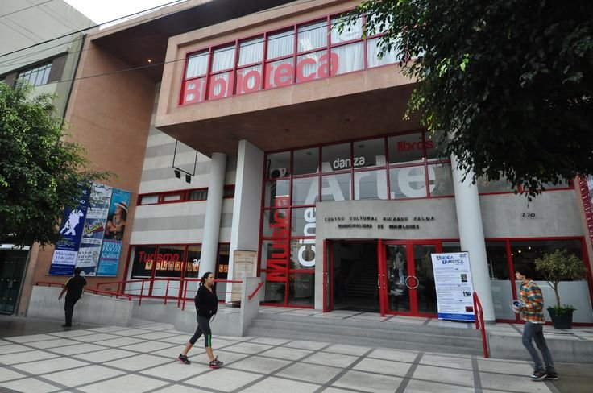

Miraflores · Centro Cultural Ricardo Palma
Historias de piedra: el arte de hacer brillar el ónix peruano
Obras en ónix peruano del escultor Alfredo Rolando Grosman, que juegan con la luz, las transparencias y la piedra en bruto.
- 09/10/2026
- Gratuito